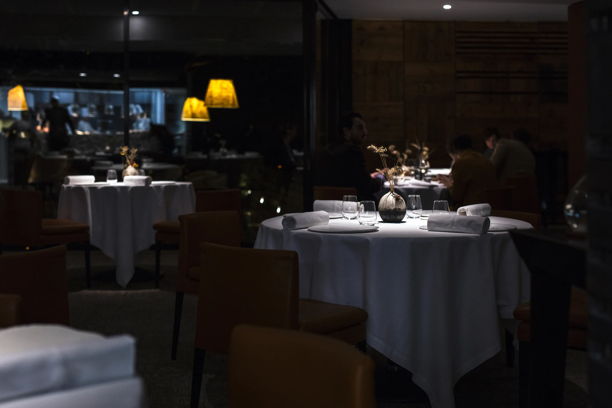
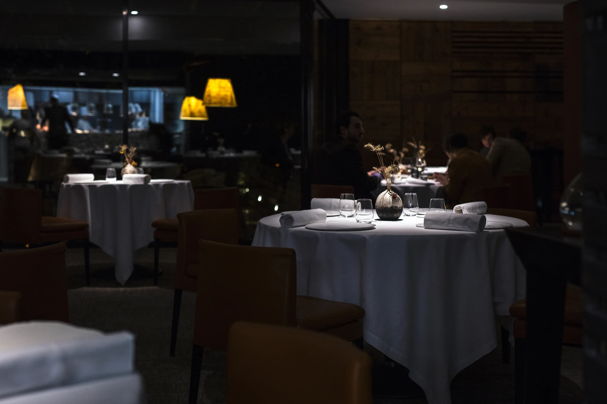
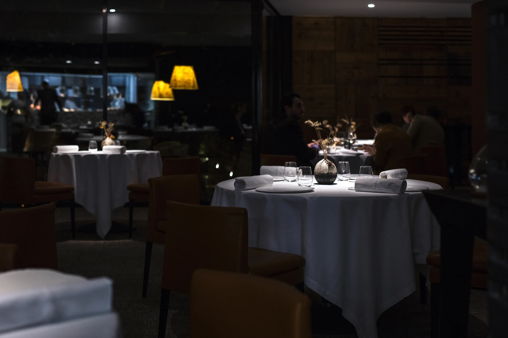
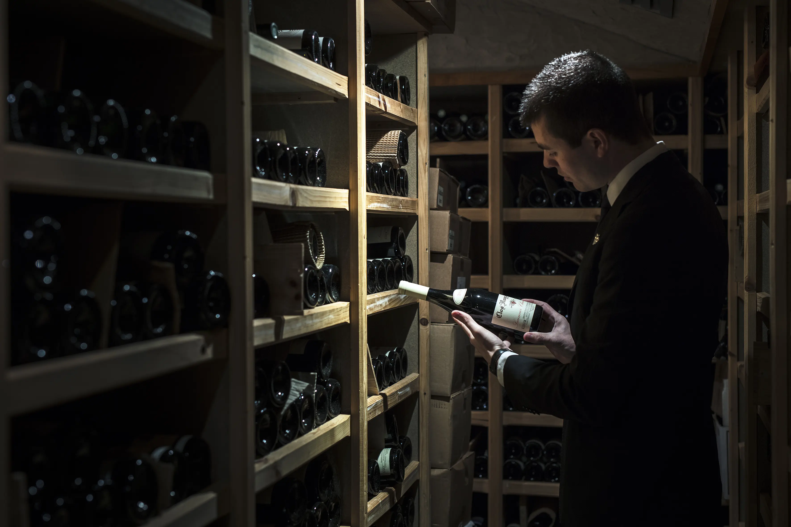

UN LIEU
Univers singulier, identitaire et façonné par l'homme. Essences de bois brulé, pierre de Savoie et cristal taillé, la salle, apaisante et épurée, accueille l'authentique transparence réconfort

 



LE JARDIN
L'inspiration quotidienne, dans son jus, le végétal s'exprime au gré du temps, dans ses moindres mouvements, discret ou profus, libre d'être soi.
ESPRITS ENGAGÉS
Epouser une identité unique, pousser jusqu'à l'ultime sa passion sensible et émotionnelle, curieuse et libre d'être.
